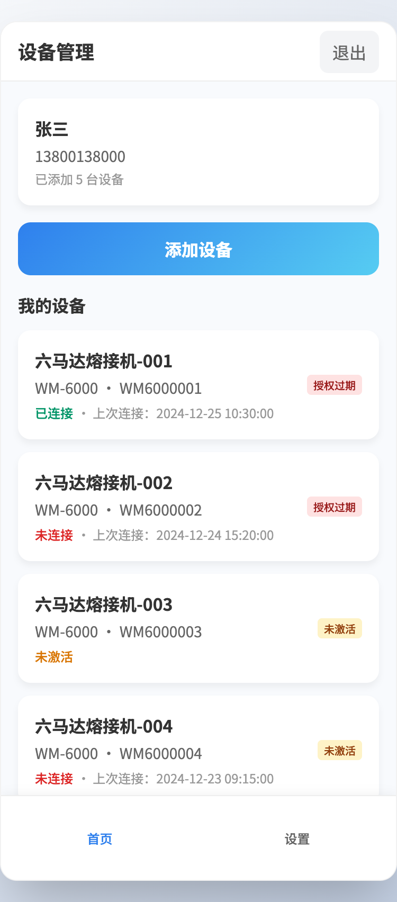
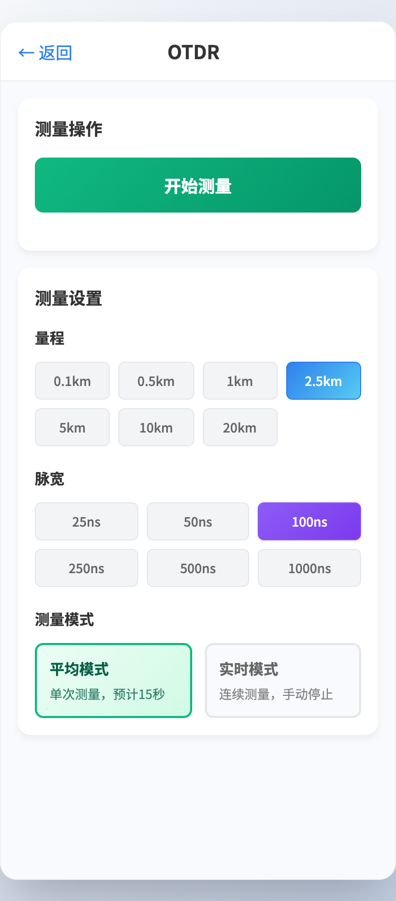
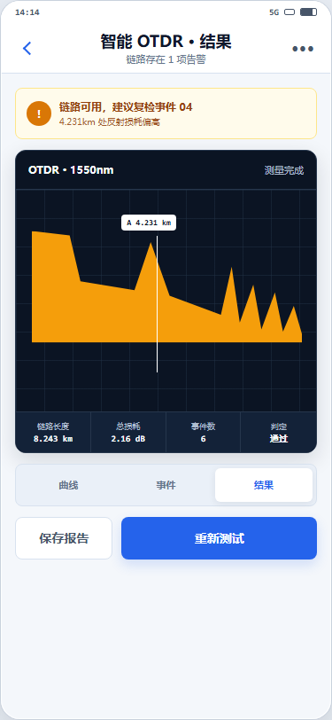
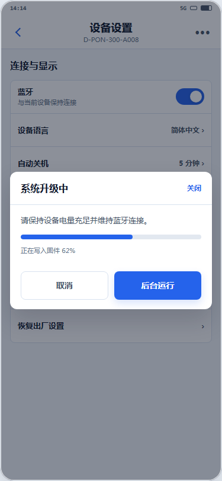
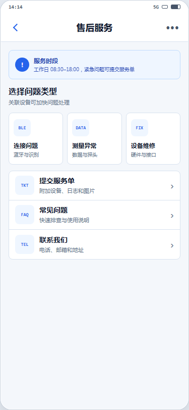
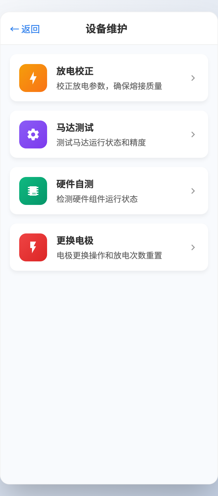

01 现场任务
用户站在设备旁边时，先要知道现在能不能测
便携式 OTDR、光功率计等设备有明确的专业能力，但连接、授权、固件或设备异常都可能阻止测试。现场人员需要快速完成判断，而不是先理解系统内部结构。
02 我接手时的问题
专业能力分散在连接、测试、维护和服务中
我先按一次现场作业重新排列这些环节：准备设备、确认条件、执行测试、保存结果，遇到异常时继续恢复或进入售后。页面顺序必须贴合作业顺序。
03 可用判断
连接成功后，设备仍可能不能测试
- 通信状态与账号、激活和授权状态容易混在一起
- 不同设备能力缺少一致的准备与进入方式
- 测试记录缺少设备、时间与任务上下文
- 固件版本和升级异常会直接影响设备可用性
- 发生问题后，测试信息需要带入售后处理
04 现场视角
如果用户正站在设备旁边
他只需要三个答案：现在能不能测？为什么不能测？下一步应该做什么？我把技术状态放在对应操作旁，只保留会影响当前作业的信息。
确认设备满足测试条件。
完成测量并保存记录。
保留上下文，按原因恢复或进入售后。
05 我负责的部分
把设备能力整理成现场人员可执行的顺序
- 对照设备需求清单梳理 OTDR 与光功率能力
- 定义发现、连接、激活、授权和可用状态
- 设计测量参数、执行反馈与记录查看
- 规划固件升级过程和失败恢复路径
- 关联具体设备、测试上下文与售后订单
- 协同硬件、研发与测试验证关键链路
06 三方分工
App 负责引导，设备负责执行，服务端负责记录
发现并连接设备，确认条件，进入测试并查看记录。
执行 OTDR、光功率等测试，返回结果、状态与版本信息。
维护设备资料、授权和版本，承接现场无法恢复的问题。
07 现场测试顺序
九个状态节点对应一次真实作业
- 01发现设备
- 02建立连接
- 03确认激活
- 04确认授权
- 05检查能力
- 06开始测试
- 07获得结果
- 08保存记录
- 09异常进入售后
08 关键产品界面
真实页面覆盖准备、测试、结果与服务
以下为项目真实 Demo 截图，账号、设备编号、时间和状态为演示数据，不代表真实用户或运营结果。

判断设备当前是否可以使用。
我的设计重点我把连接、激活和授权分开，并在状态旁给出下一步。

在移动端完成参数设置并开始测试。
我的设计重点把参数和执行入口放在同一任务页，减少现场切换。

把曲线、事件、距离与判定保存在同一次结果中。
我的设计重点结果既支持现场判断，也保留复测与报告入口。

说明升级阶段以及设备需要保持的条件。
我的设计重点显示进度，并保留取消或后台运行选择，避免用户误判卡死。

让连接、测量或设备异常进入后续处理。
我的设计重点按问题类型承接上下文，再进入服务单或人工支持。

集中承接校正、测试、自检与耗材更换。
我的设计重点把低频维护与日常测量分开，避免干扰主作业。
09 三个现场判断
每个状态都要回答“现在怎么办”
不等于。激活、授权或固件仍可能阻止测试，因此通信状态和业务可用状态分别展示。
结果关联设备、测试类型与时间，方便复查，也能在出现问题时带入服务处理。
影响测试可靠性的版本问题会在作业前明确阻塞，并提供升级或退出选择。
10 异常恢复
现场不能因为一个模糊错误重新开始
蓝牙、4G、激活、授权和固件会形成多种组合，页面需要准确指出是哪一个条件阻止了测试。
弱网、离线、升级中断和设备不兼容分别定义保留内容、重试方式和继续入口。
11 当前 Demo
验证现场作业的信息顺序和关键操作
Demo 覆盖设备发现与连接、激活和授权、OTDR 与光功率测试、使用记录、固件升级和售后入口。它用于验证产品方案与交互，不代表已经正式上线的商业产品。
12 如果重新推进
我会更早建立设备能力矩阵和异常样本库
每类设备能返回什么状态、离线时限制哪些操作、升级失败后从哪里继续，都应该在交互设计前确认。这样现场页面不会等到联调阶段才补恢复路径。